1. Instal·lació i configuració de Windows
1.1. Creació de la màquina virtual
He creat una màquina virtual a
VirtualBox amb el nom
windows-IvanPrats
i he seleccionat la imatge ISO de
Windows 10 de 64 bits.
He marcat l'opció de continuar amb la
instal·lació desatesa per fer la
instal·lació manualment.
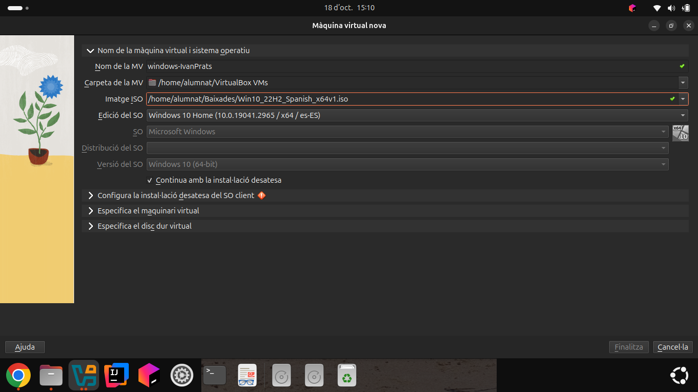
1.2. Memòria RAM i processador
He configurat la màquina virtual amb
4096 MB de memòria RAM (4 GB)
i 1 CPU.
A la captura també es veu que
l'opció EFI
està desactivada.
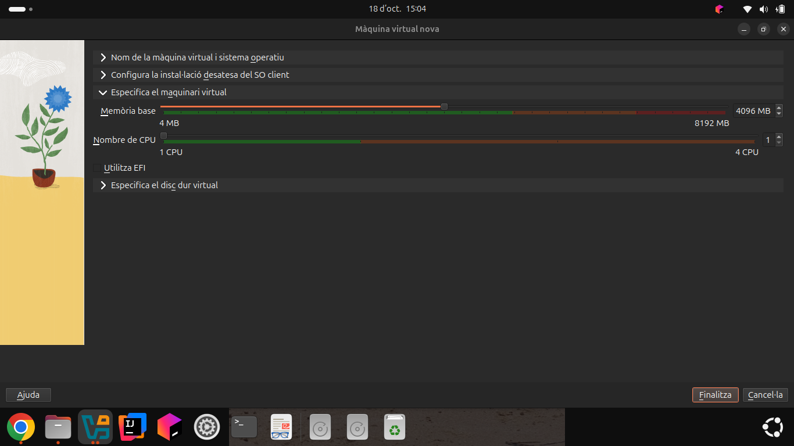
1.3. Disc dur virtual
He creat un disc dur virtual nou de
50 GB en format
VDI (VirtualBox Disk Image),
per instal·lar-hi Windows i crear
les particions de la pràctica.
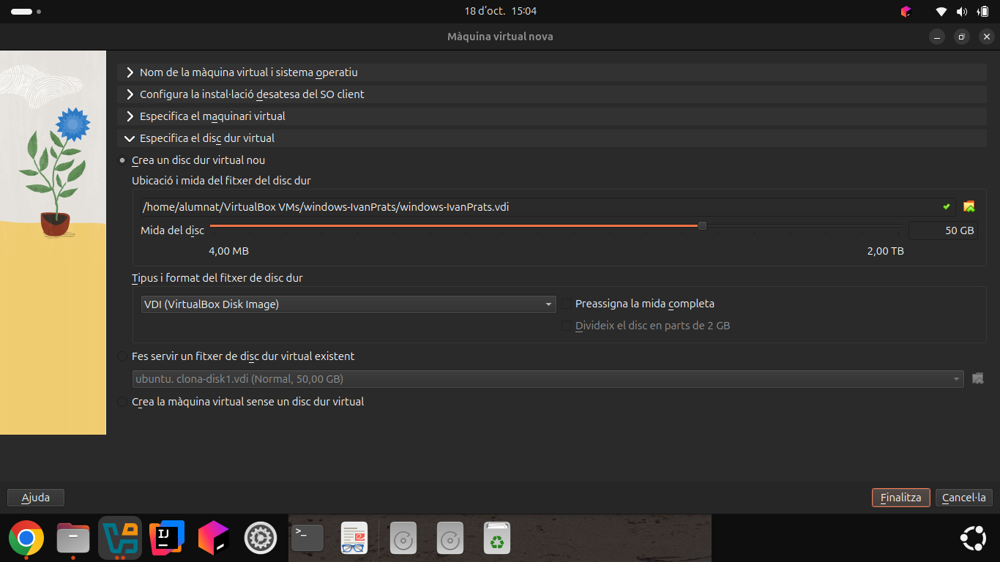
1.4. Configuració de xarxa
He comprovat la configuració de xarxa
de VirtualBox.
L'adaptador 1 està habilitat i
connectat en mode NAT,
amb el cable virtual connectat.
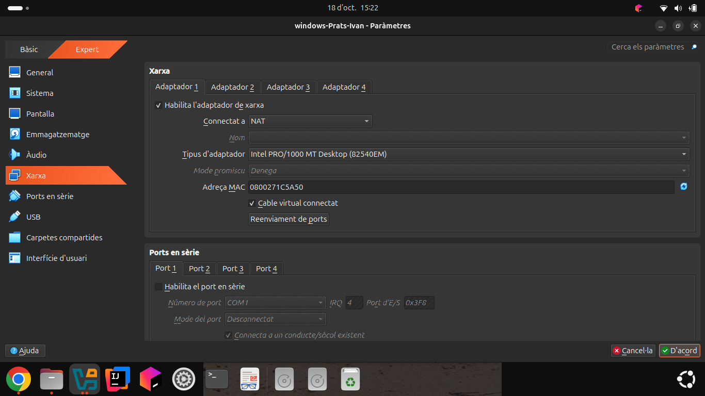
1.5. Particions
Durant la instal·lació he preparat
una partició principal de
30 GB per a Windows
i he deixat 20 GB
sense assignar per a les dades.
Windows també ha creat una petita
partició reservada per al sistema.
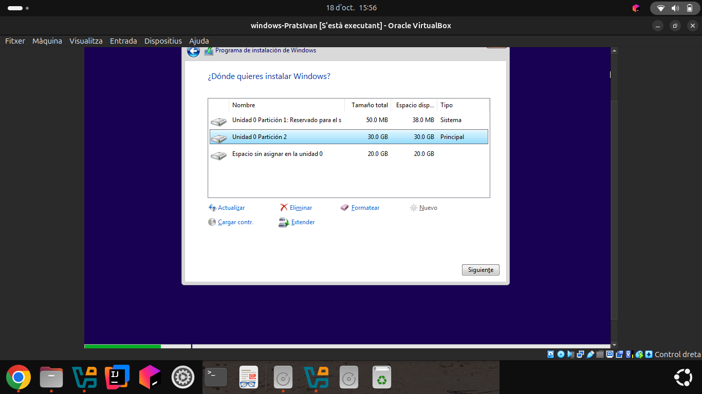
1.6. Unitat de dades
Un cop instal·lat Windows, he creat
i formatat la unitat
DADES (D:)
amb els 20 GB restants.
A l'Administrador de discs es veu
la unitat C:
i la unitat D:
en format NTFS.
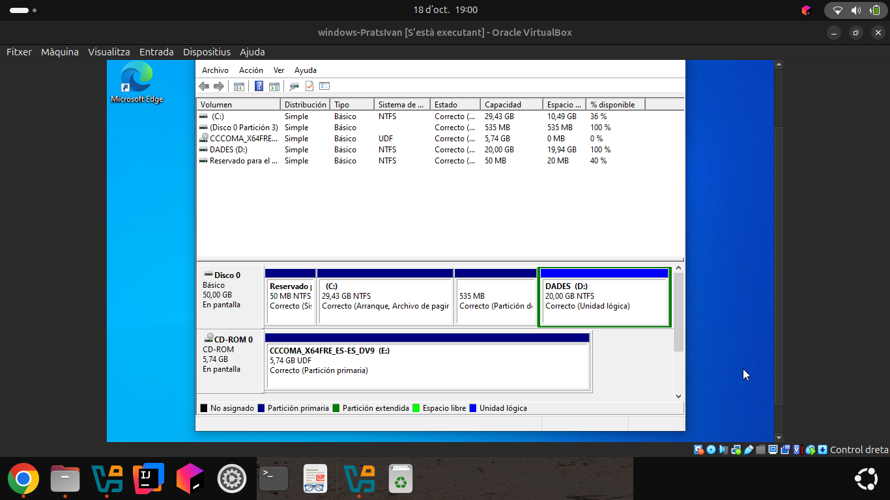
↑ Tornar a l'índex
2. Llicències de Windows
2.1. Estat d'activació
He obert
Configuració → Actualització i seguretat
→ Activació
per consultar l'estat de la llicència.
La versió instal·lada és
Windows 10 Pro
i no està activada.
El sistema mostra l'error
0xC004F213
perquè no ha trobat cap clau
de producte al dispositiu.
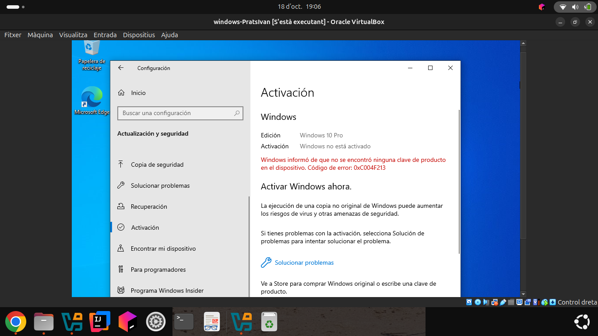
2.2. Comprovació de la llicència amb CMD
He obert el símbol del sistema
(CMD)
i he executat la següent comanda:
slmgr /xpr
El resultat indica que Windows
està en mode de notificació.
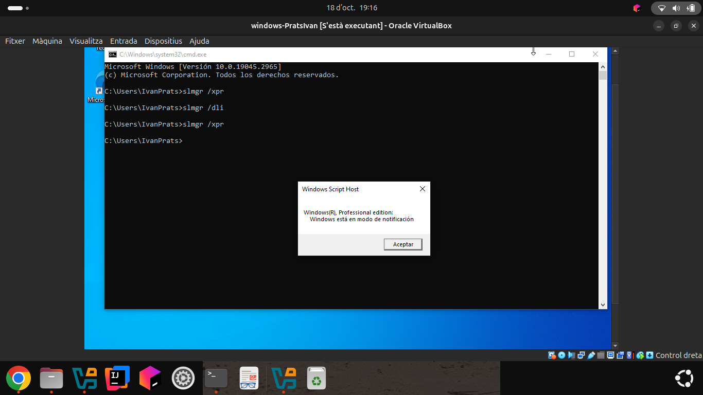
Després he executat:
slmgr /dli
Aquesta comanda mostra l'edició
Professional,
el canal RETAIL
i l'estat de llicència de notificació.
Per tant, Windows no està activat.
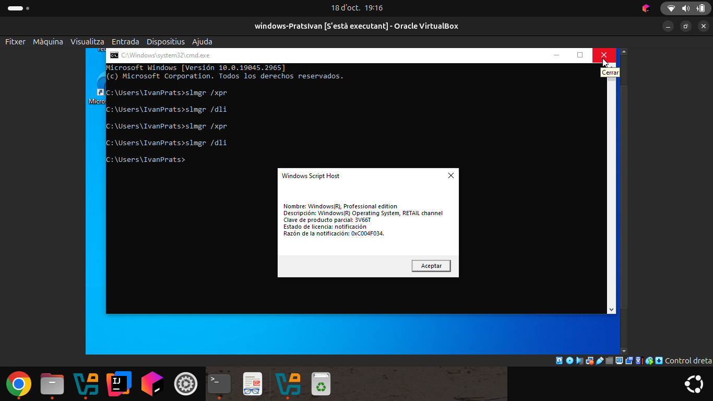
2.3. Comparació de preus de Windows 11
He consultat els preus de
Windows 11 Home
i Windows 11 Pro
a la botiga oficial de Microsoft
i a MediaMarkt.
Els preus que apareixien a les
captures eren els següents:
| Botiga |
Windows 11 Home |
Windows 11 Pro |
| Microsoft (USB, espanyol) |
145,00 € |
259,00 € |
| MediaMarkt (venedor extern) |
9,99 € |
9,99 € |
Els preus no són directament equivalents:
a Microsoft he consultat versions USB,
mentre que a MediaMarkt les ofertes
mostrades són d'un venedor extern.
Per què hi ha tanta diferència de preu?
La diferència de preu entre Microsoft i MediaMarkt
es deu principalment al tipus de llicència i al venedor.
Microsoft ven Windows directament, amb una llicència
oficial i unes condicions de compra clares.
En canvi, les ofertes de 9,99 € que he trobat
a MediaMarkt són de venedors externs i poden
correspondre a claus OEM o digitals,
que tenen condicions i limitacions diferents.
Les llicències OEM solen estar vinculades
a un ordinador concret i no es poden transferir
lliurement a un altre.
A més, comprar una clau molt barata no garanteix
que tinga el mateix origen, suport o drets d'ús
que una llicència comprada directament a Microsoft.
Per tant, encara que totes dues puguen
servir per activar Windows, no significa que
siguen exactament el mateix producte ni que
tinguen les mateixes condicions.
En el cas de Windows 11 Pro de MediaMarkt,
s'indica una llicència
OEM de descàrrega digital.
Cal tenir en compte el tipus de llicència,
el venedor i les condicions abans
de comparar-les.
Windows 11 Home a Microsoft
A la botiga oficial de Microsoft,
Windows 11 Home en format USB
tenia un preu de 145,00 €.
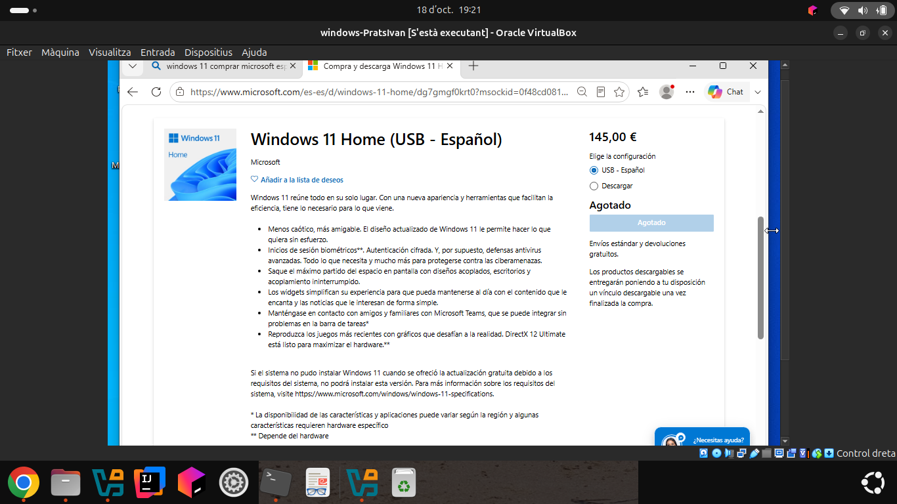
Windows 11 Pro a Microsoft
A la botiga oficial de Microsoft,
Windows 11 Pro en format USB
tenia un preu de 259,00 €.
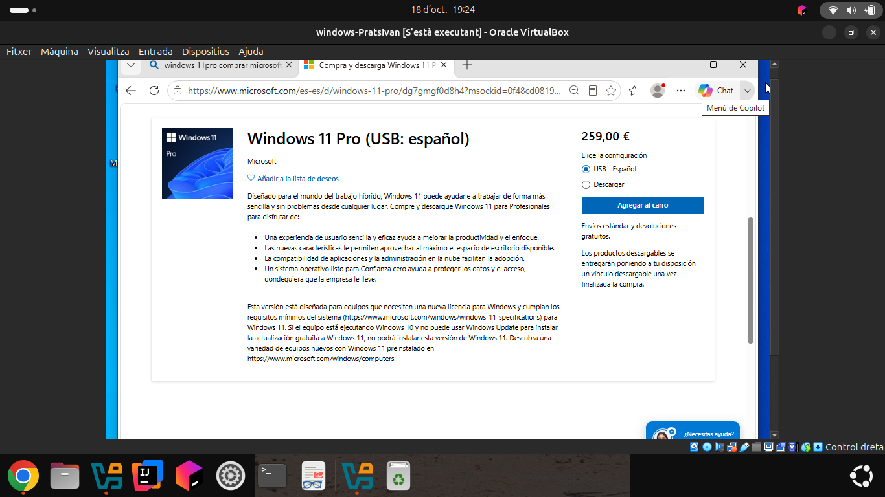
Windows 11 Home a MediaMarkt
A MediaMarkt, un venedor extern
oferia Windows 11 Home per
9,99 €.
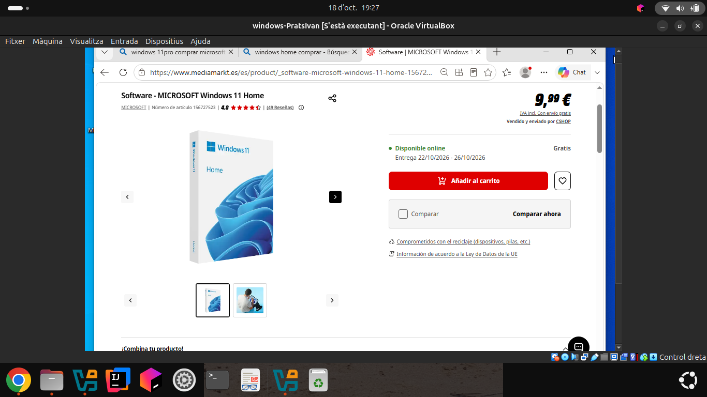
Windows 11 Pro a MediaMarkt
A MediaMarkt, un venedor extern
oferia Windows 11 Pro per
9,99 €,
en format de llicència OEM digital.
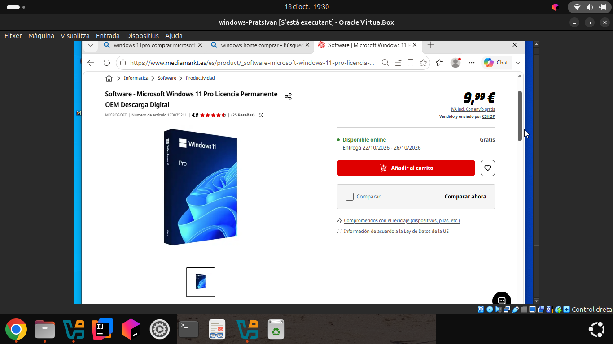
2.4. Què és una llicència CAL?
He consultat la pàgina oficial
de Microsoft sobre les
llicències d'accés de client (CAL)
.
Una CAL no és un programa,
sinó una llicència que dona dret
a un usuari o dispositiu a accedir
legalment a determinats serveis
d'un servidor.
Aquest tipus de llicència pot ser
necessari, per exemple, per utilitzar
recursos compartits d'una xarxa.
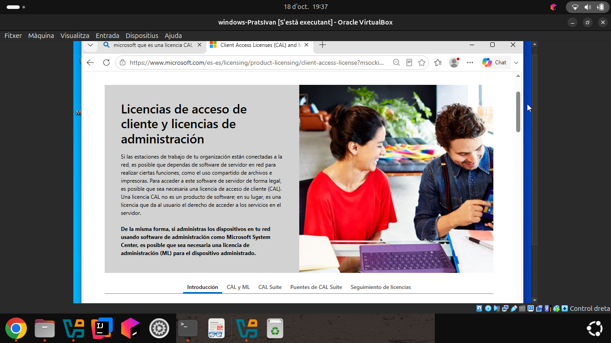
↑ Tornar a l'índex
3. Comandes bàsiques
3.1. Crear i entrar a la carpeta de pràctiques
Primer he utilitzat
cd Desktop
per anar a l'escriptori.
Després he creat una carpeta
anomenada practica
amb mkdir practica
i hi he entrat amb
cd practica.
cd Desktop
mkdir practica
cd practica
La captura mostra que ja estic
dins de la carpeta.
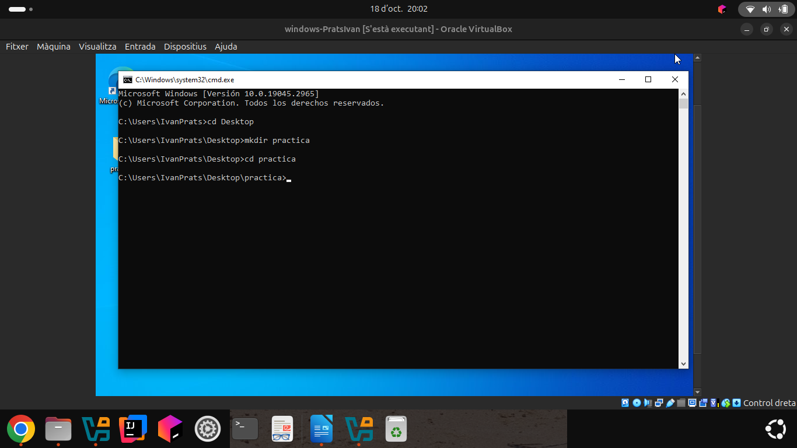
3.2. Crear un fitxer de text i comprovar-lo
Dins de la carpeta
practica,
he executat la comanda següent
per crear el fitxer
nota.txt
amb el text «hola»:
echo hola > nota.txt
Després he utilitzat
dir
per comprovar que el fitxer
apareix a la carpeta.
dir
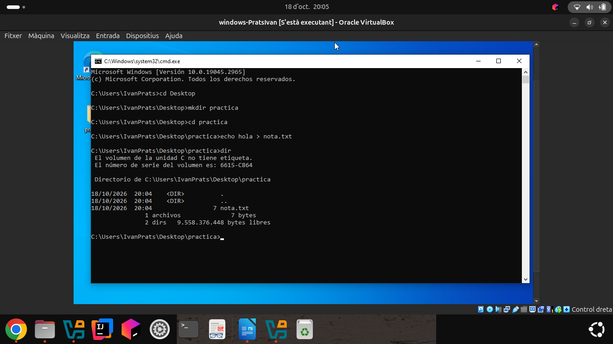
3.3. Copiar un fitxer
He fet servir la comanda
copy
per crear una còpia del fitxer.
copy nota.txt copia.txt
dir
Després he comprovat que
hi ha els dos fitxers:
nota.txt
i copia.txt.
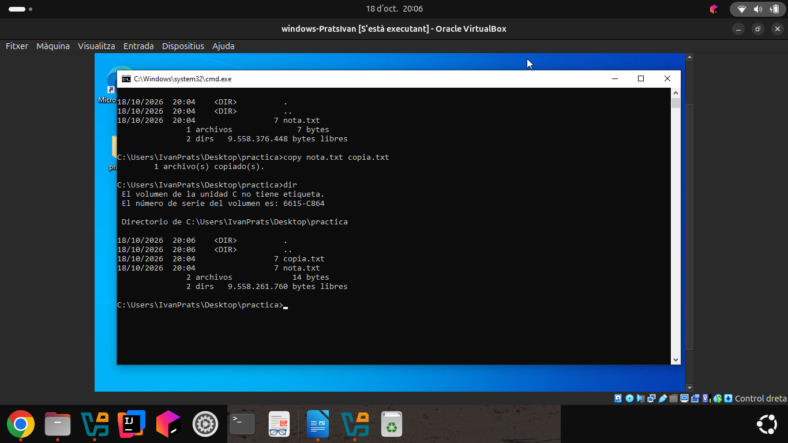
3.4. Crear una carpeta i moure-hi el fitxer
He creat la carpeta
arxiu
amb mkdir arxiu.
A continuació, he mogut
copia.txt
a aquesta carpeta amb
la comanda move.
mkdir arxiu
move copia.txt arxiu
El terminal confirma que
s'ha mogut un fitxer.
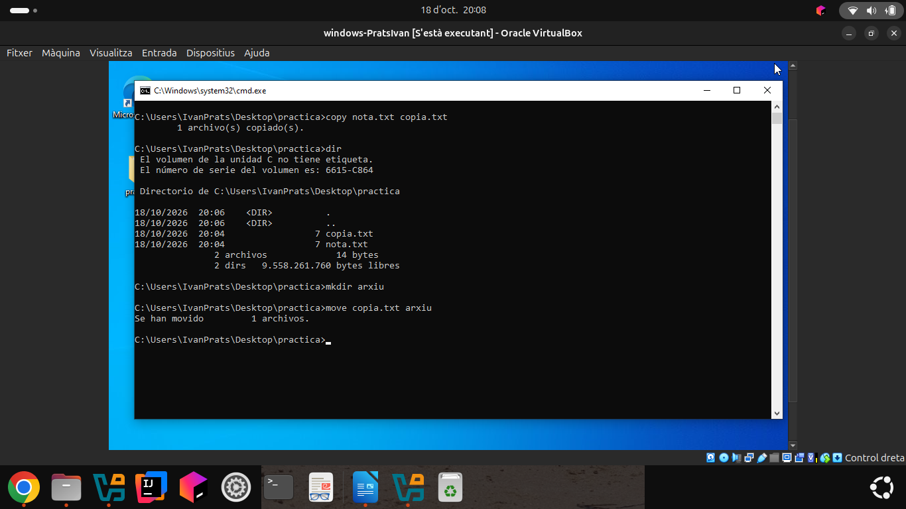
3.5. Canviar noms de fitxers i carpetes
He canviat el nom de
nota.txt
a notes.txt
amb la comanda ren.
També he canviat el nom
de la carpeta arxiu
a backup.
ren nota.txt notes.txt
ren arxiu backup
dir
Amb dir
he comprovat els nous noms.
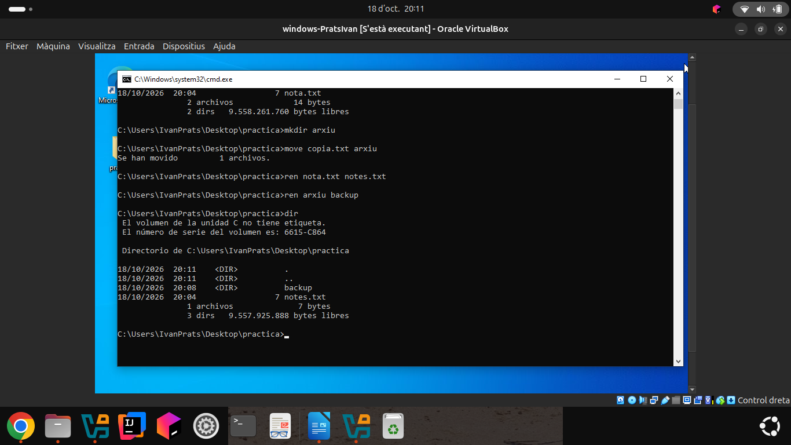
3.6. Entrar en una carpeta i tornar enrere
He entrat a la carpeta
backup
amb cd backup
i he utilitzat dir
per comprovar que conté
copia.txt.
Després he escrit
cd ..
per tornar a la carpeta
practica.
cd backup
dir
cd ..
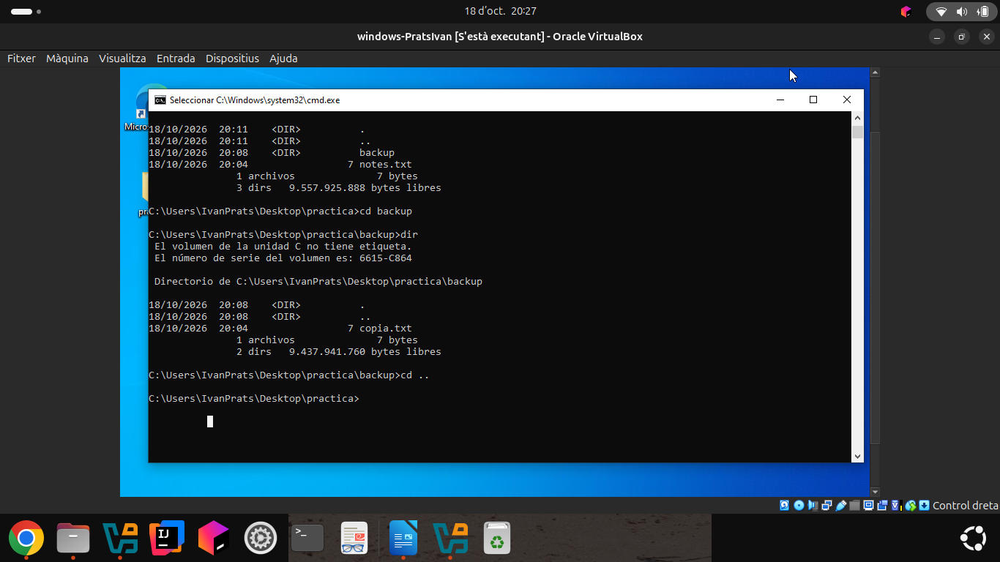
3.7. Mostrar l'estructura de carpetes i fitxers
He executat la comanda
tree /f
dins de la carpeta
practica
per veure l'estructura completa.
tree /f
El resultat mostra
notes.txt
i la carpeta backup,
que conté copia.txt.
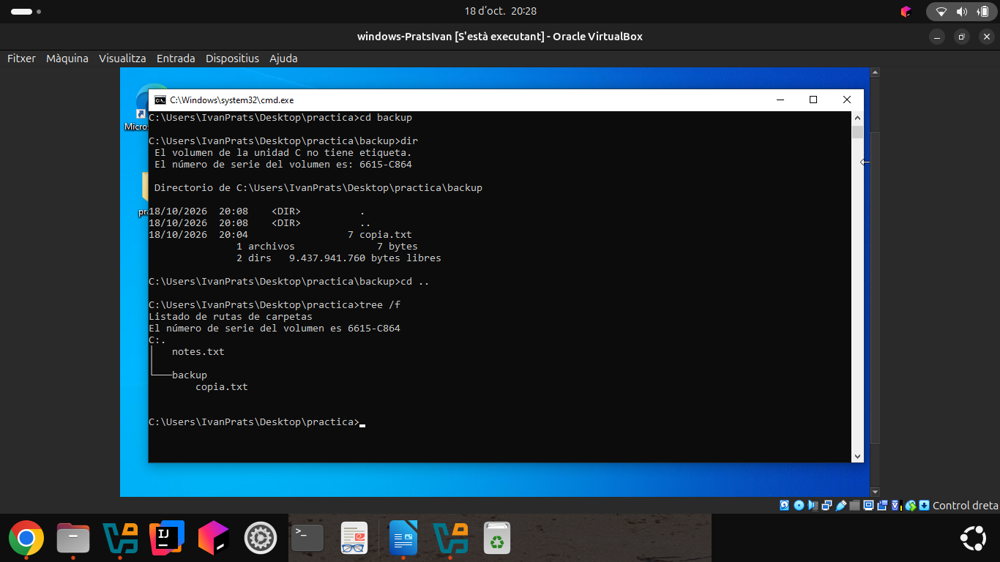
3.8. Eliminar un fitxer i verificar el resultat
He executat
del notes.txt
per eliminar el fitxer
notes.txt.
Després he utilitzat
dir
per comprovar que ja no
apareix a la carpeta
practica
i que la carpeta
backup
continua existint.
del notes.txt
dir
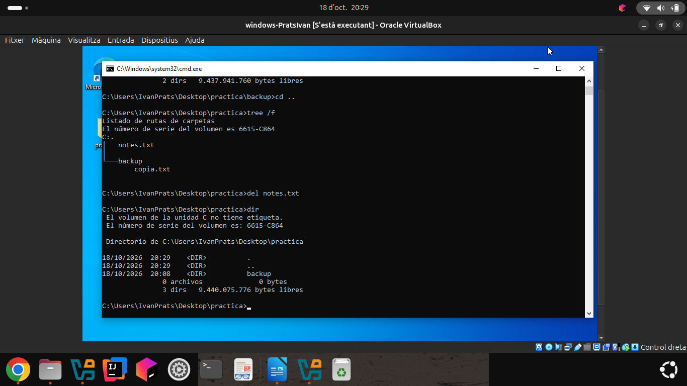
3.9. Netejar la pantalla del terminal
Finalment, he utilitzat
l'ordre cls
per netejar la finestra
del símbol del sistema.
cls
Aquesta comanda deixa
el terminal buit i preparat
per continuar treballant.
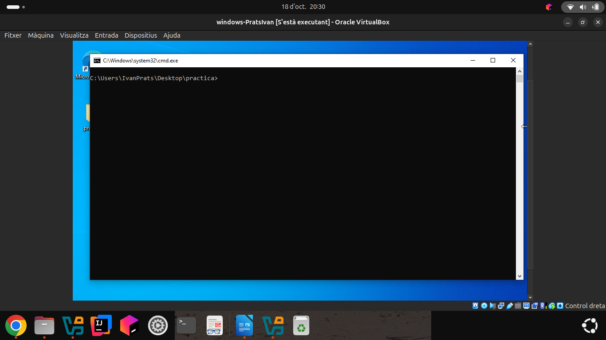
↑ Tornar a l'índex
4. Aplicacions i punts de restauració
4.1. Creació del punt de restauració
He accedit a
Propietats del sistema →
Protecció del sistema
per crear un punt de restauració.
El sistema confirma que
el punt de restauració
s'ha creat correctament.
La protecció està activada
per a la unitat C:.
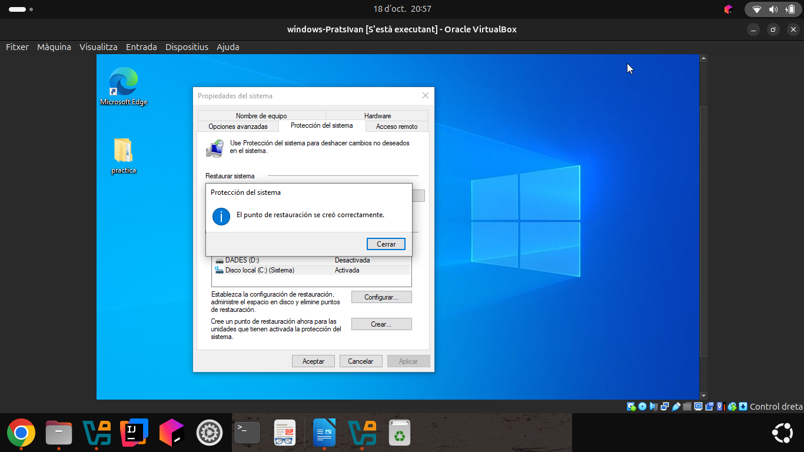
4.2. Instal·lació i comprovació de Google Chrome
Després de crear el punt
de restauració, he instal·lat
i obert Google Chrome.
Això permet disposar d'un canvi
al sistema que es pugui comprovar
durant la restauració.
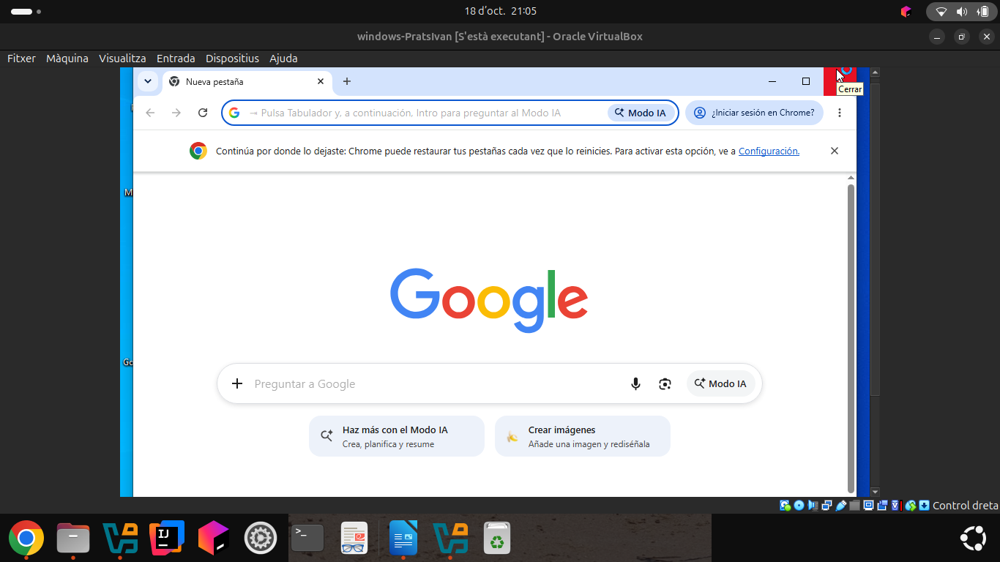
4.3. Comprovació dels programes afectats
Abans de restaurar el sistema,
he consultat la llista de
programes afectats pel punt
de restauració
«abans de Chrome».
Windows indica que
Google Chrome 155.0.8059.85
s'eliminarà en tornar
a aquest estat.
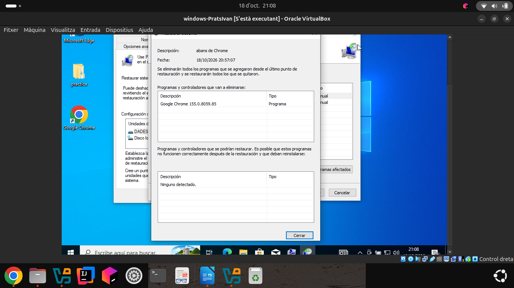
4.4. Restauració completada
Windows confirma que
la restauració del sistema
s'ha completat correctament.
El sistema també indica
que els documents
no han resultat afectats.
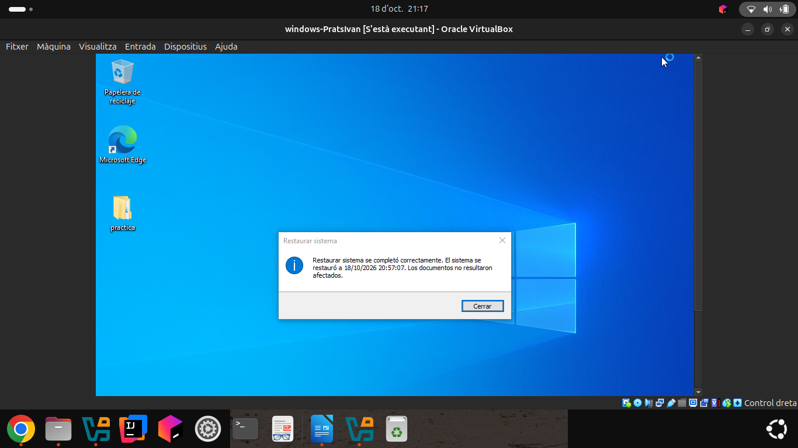
↑ Tornar a l'índex
5. Xarxa
5.1. Comprovació inicial de xarxa
Amb la configuració de xarxa inicial,
la màquina virtual presenta
l'adreça IP
10.0.2.15.
He comprovat la connexió
executant les següents comandes:
ping google.com
ping 8.8.8.8
Les dues ordres reben
quatre respostes cadascuna,
sense pèrdua de paquets.
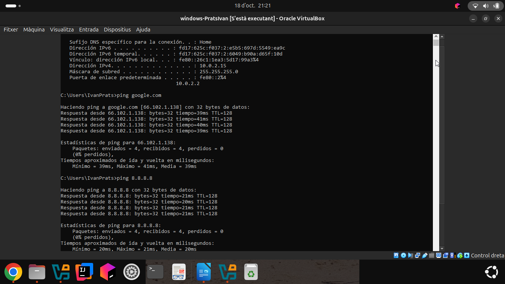
5.2. Simulació d'una incidència de connectivitat
He comprovat una situació
de fallada de xarxa.
El domini google.com
no es pot resoldre.
Les proves de connexió
cap a 8.8.8.8
mostren el missatge:
«Host de destino inaccesible».
Això evidencia un problema
de connectivitat de xarxa
en aquell moment.
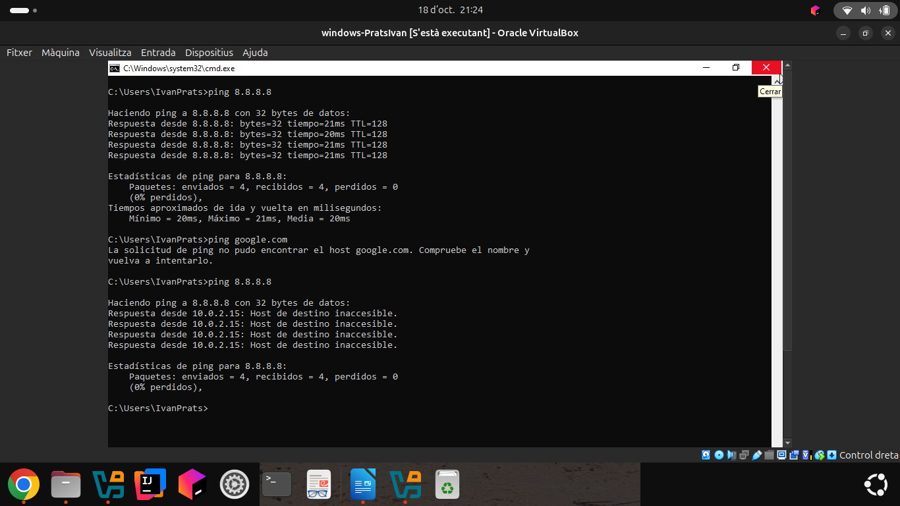
5.3. Comprovació després del canvi de xarxa
Després del canvi de configuració,
la màquina mostra l'adreça IP
192.168.1.133
i la passarel·la
192.168.1.1.
He tornat a executar
les proves de connectivitat:
ping google.com
ping 8.8.8.8
Tant google.com com 8.8.8.8
responen correctament,
sense pèrdua de paquets.
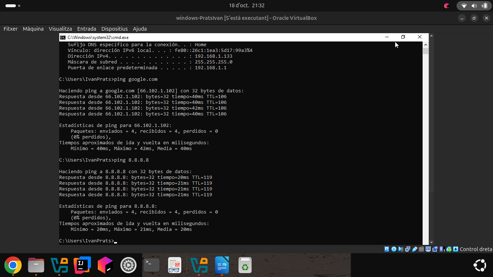
5.4. Neteja de la memòria cau DNS
He executat la comanda:
ipconfig /flushdns
Windows confirma que
la memòria cau de resolució DNS
s'ha buidat correctament.
Després he tornat a comprovar
la connexió amb:
ping google.com
ping 8.8.8.8
Les dues proves tornen
a funcionar correctament.
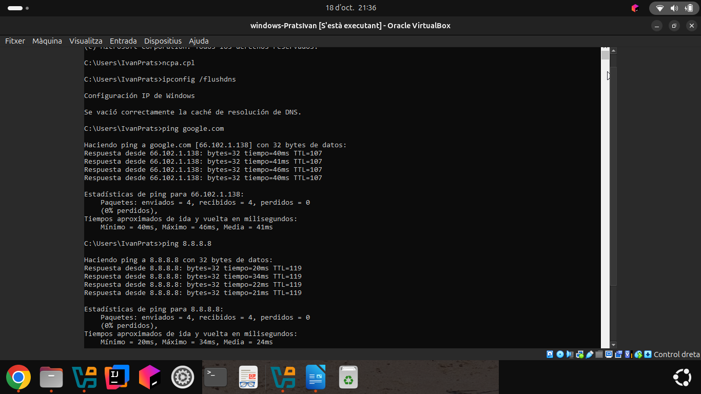
5.5. Configuració automàtica d'IPv4 i DNS
He accedit a les propietats
del protocol
IPv4
de l'adaptador Ethernet.
He comprovat que
tant l'adreça IP com
els servidors DNS
s'obtenen
automàticament.
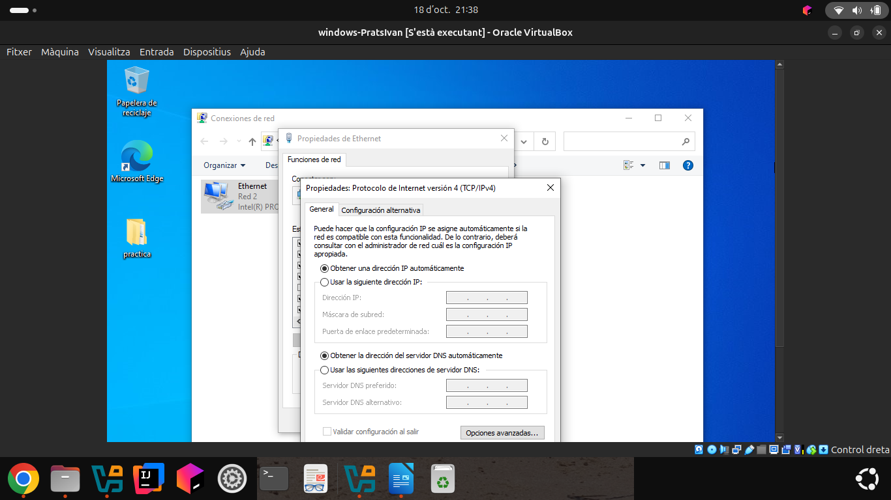
↑ Tornar a l'índex
Conclusió
S'ha verificat la creació
i l'ús d'un punt de restauració,
així com les proves de connectivitat,
la resolució d'una incidència
de xarxa i la configuració
automàtica d'IP i DNS.
↑ Tornar a l'índex